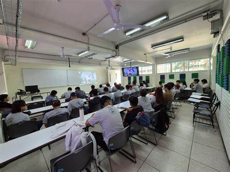
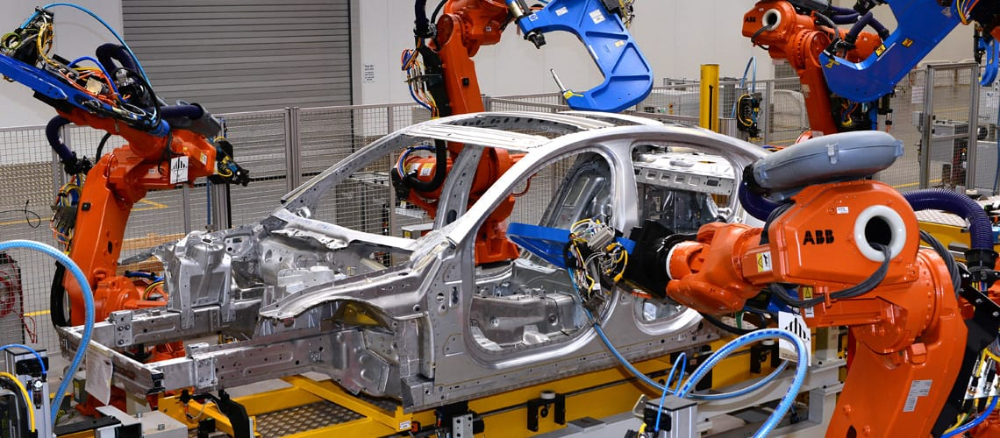

Regresar
-
Ingeniería ambiental
es una disciplina que busca soluciones a los problemas ambientales mediante la aplicación de principios de ingeniería y ciencias ambientales. Se enfoca en la gestión sostenible de recursos, la prevención y mitigación de la contaminación, y la promoción de la sostenibilidad.
-
Ingeniería civil
se enfoca en el diseño, construcción y mantenimiento de infraestructuras y obras civiles, como carreteras, puentes, edificios, sistemas de agua y saneamiento, entre otros. Los ingenieros civiles trabajan para asegurar la seguridad, viabilidad económica, funcionalidad y sostenibilidad de estos proyectos.

-
Ingeniería en Computación
Forma especialistas en la gestión del talento hum
-
Ingeniería eléctrica
especializar profesionales en el diseño, proyecto y ejecución de sistemas eléctricos tales como la distribución, transmisión y generación de energía eléctrica.
-
Ingeniería física
es una disciplina que aplica los principios de la física y la matemática para desarrollar soluciones a problemas tecnológicos y mejorar la calidad de vida de las personas. Los ingenieros físicos trabajan en diversas áreas, desde la investigación y el desarrollo tecnológico hasta la administración de proyectos y la consultoría científica.
-
Arquitectura
Combina arte, ciencia y tecnología para diseñar y planificar espacios habitables, funcionales y
estéticamente agradables.

-
Diseño Gráfico
Creación y comunicación visual de mensajes a través de distintos medios, combinando arte, tecnología y
estrategia.

-
Ingeniería en Matemáticas
consiste en la aplicación de conocimientos matemáticos avanzados para modelar y resolver problemas en diversos campos como la ingeniería, la ciencia, la tecnología, la industria y la administración. Los ingenieros matemáticos se enfocan en el análisis y la solución de problemas utilizando métodos matemáticos rigurosos, diferenciándose de los matemáticos puristas por su enfoque aplicado.
-
Ingeniería Civil
Diseño, construcción y mantenimiento de infraestructuras esenciales como edificios, puentes y
carreteras.

-
Ciencias y Técnicas de la Comunicación
Estudio y aplicación de procesos comunicacionales en diversos medios y plataformas.
-
Ingeniería Industrial
Optimiza procesos y recursos en sistemas productivos y de servicios para mejorar la eficiencia.
-
Administración de Empresas
Prepara a los estudiantes para dirigir organizaciones en áreas como finanzas, marketing y operaciones.

-
Ingeniería química
Química consiste en el diseño, operación, innovación y optimización de procesos químicos para transformar materias primas en productos de utilidad, considerando aspectos técnicos, ambientales y económicos. Esta disciplina aplica conocimientos de química, física, biología y matemáticas para lograr la transformación y la producción a gran escala.

-
Ingeniería en Gestión de Tecnologías de la Información
Gestiona sistemas informáticos y soluciones tecnológicas para resolver problemas organizacionales.

-
Ingeniería en Mecatrónica
Integra electrónica, mecánica y sistemas de control para desarrollar tecnología automatizada.

-
Diseño industrial
formar profesionales capaces de diseñar y desarrollar productos innovadores, funcionales y estéticamente atractivos. Implica combinar la creatividad, la tecnología y los conocimientos de fabricación para crear soluciones a problemas de diseño en diversas industrias. Los diseñadores industriales trabajan en áreas como el diseño de productos, el desarrollo de marcas, la ergonomía y la gestión de proyectos.